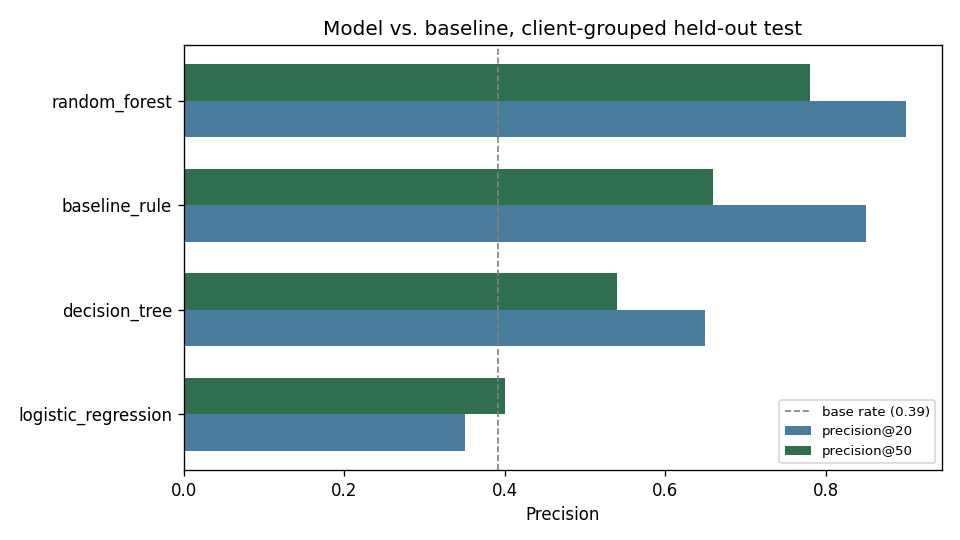
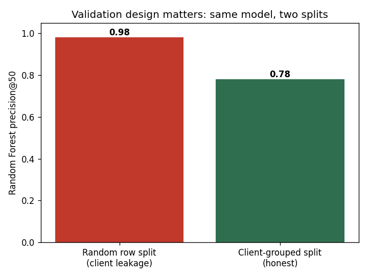
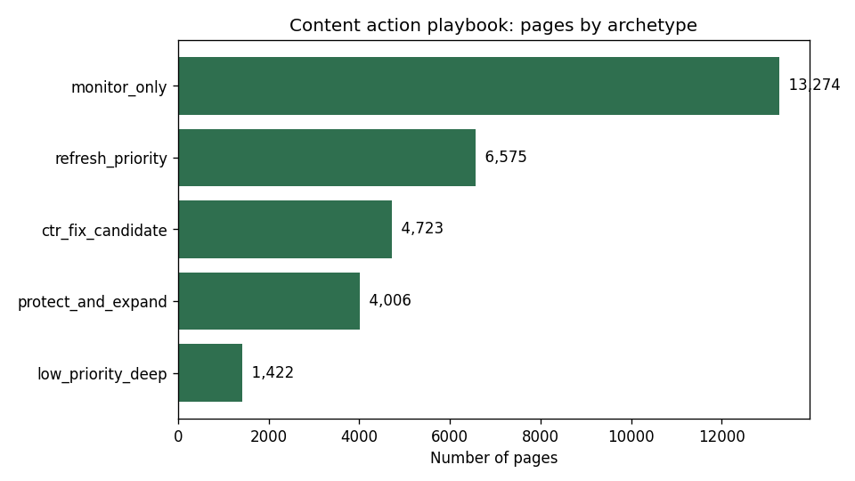

FlyRank publishes content into client websites and watches search performance so pages don't get abandoned after launch — but content quietly decays anyway, and most teams notice too late. FlyRank's product already flags this with hand-written rules (a health score, quick-win tags), and this paper's case study is the gap those rules leave open. Question: given a portfolio of content pages, which ones should a human review first for a possible SEO decline — and can a trained model beat the hand-written rule it's meant to replace? Data: 30,000 pages across 32 anonymized client portfolios, with 90-day search and engagement metrics and a 30-day-vs-previous-30-day trend label. Method: a transparent rule-based baseline (standing in for FlyRank's existing flag logic) was compared against Logistic Regression, a Decision Tree, and a Random Forest, validated on a client-grouped held-out split (not a random row split) to prevent a model from partly recognizing clients it had already seen. Result: the Random Forest reached 0.78 precision in its top 50 flagged pages, versus 0.66 for the rule-based baseline and a 0.39 base rate on the held-out set — and the same model, scored under a naive random split instead, appeared to reach 0.98, a result driven almost entirely by client leakage rather than real skill. What it's for: a weekly, human-reviewed triage list for a content team, not an autonomous decision system.
The FlyRank content problem this paper takes on
FlyRank builds content as infrastructure: research, write, publish straight into a client's site, then watch the search data and optimize — a full cycle meant to run mostly on algorithms rather than people doing it by hand. The trouble shows up in almost every portfolio the same way: a page ranks well, then quietly decays — rankings slip, clicks drop — and by the time someone notices, value has already been lost.
FlyRank's product already answers "which page first?" today, with hand-written rules: a health score, quick-win tags, needs-attention flags — if-this-then-that logic with hand-picked thresholds. These rules work and run in production, but by design they run out exactly where signals get numerous, tangled, and shifting. Nothing trained on the data has replaced them yet — that gap is this paper's case study, and its existing flags are used here strictly as a baseline to beat, never as a model input (see Methodology).
A content team with limited review time faces this same question every week: out of thousands of pages, which ones are actually worth a human's attention right now? Reviewing randomly wastes time on healthy pages; reviewing by age alone misses pages that are declining despite being recently touched. This paper builds and honestly validates a risk score meant to answer that question — and spends as much effort disclosing where the score should not be trusted as it does reporting where it works.
Source, size, and what was excluded
The dataset is the anonymized FlyRank ML Internship content-performance release: one row
per content page, with search, click, and engagement metrics aggregated over a 90-day
window, plus a 30-day-vs-previous-30-day trend comparison. It spans 30,000 rows
across 32 anonymized client portfolios, five position tiers (from top_3
to deep), and three content types.
No client names, raw URLs, or query text appear anywhere in this analysis. Any column that
defines the trend label — trend_direction, trend_pct, and every
30-day comparison-window column — was excluded from every model's feature set, kept only
as the evaluation target. This is checked programmatically, not just declared (see
Methodology).
Label, features, baseline, validation, leakage
Label: is_declining_label = 1 if trend_direction ==
"down", a 30-day-vs-previous-30-day comparison.
Features: 14 numeric signals (search volume, competition, word/char counts, days with impressions/sessions, content age, days since last update, CTR, average position, engagement rate, scroll rate, AI-traffic share) plus log-scaled 90-day totals and 8 one-hot-encoded categorical tiers — 52 columns total after encoding.
Baseline: a transparent, non-ML rule — the same style of hand-written, if-this-then-that logic FlyRank's own product flags use today (a health score, quick-win tags). It scores visible pages (real position, ≥500 impressions/90d) by how far their CTR sits below their own position-tier's median CTR, weighted by demand. No fitted weights, one reason code — this is the rule the model has to beat, and it is never fed to the model as a feature.
Validation design: a client-grouped split — 20% of the 32 clients (6 clients, 2,325 rows) held out entirely, with zero row-level overlap. This is the paper's central methodological choice, and Results below shows numerically why it matters.
Leakage checks that were actually run: (1) a forbidden-column assertion confirming the label-derived columns never entered the feature matrix, and (2) a correlation scan confirming no numeric feature exceeded 0.9 absolute correlation with the label (the highest observed was 0.19).
Model vs. baseline, same split
| Model | Precision@20 | Precision@50 | ROC-AUC |
|---|---|---|---|
| Random Forest | 0.90 | 0.78 | 0.747 |
| Baseline rule | 0.85 | 0.66 | 0.555 |
| Decision Tree | 0.65 | 0.54 | 0.698 |
| Logistic Regression | 0.35 | 0.40 | 0.700 |
Held-out set: 2,325 rows from 6 held-out clients. Base rate: 0.39.

Why the split matters
The same Random Forest was re-trained and re-scored under a plain random 80/20 row split
(ignoring client_id). Under that split, 31 of 32 clients ended up in both
train and test.

What this work cannot claim
- One portfolio, one snapshot. Findings are observed on this dataset's 90-day window, not a universal SEO law.
- Cross-sectional, not causal. A high risk score is an association the model learned, not proof that refreshing a page will fix it.
- A small held-out set. 0.78 precision@50 comes from 6 clients and 2,325 rows — real, honestly obtained, but small; treat it as directional.
- No root-cause diagnosis. Among the model's most confident wrong predictions in testing, 73% were pages with a real position but near-zero CTR — a pattern more consistent with a technical/indexing issue than a content problem. The score flags risk, not cause.
- A value proxy, not booked revenue. Click-equivalent value
(
clicks × cpc) estimates opportunity size; it is not confirmed dollars.
The action playbook
Every page is bucketed into one of five archetypes — defined by freshness and CTR, independent of the model — each with a default action. The model's risk score then ranks pages within an archetype, alongside a click-equivalent value estimate, so review time goes to pages that are both plausibly declining and already earning real value.

What should never be automated
- Auto-publishing rewritten titles, snippets, or content without a human approving the exact wording.
- Auto-deleting, unpublishing, redirecting, or noindexing any page.
- Any client-facing message generated directly from the score.
- Bulk actions triggered purely by rank crossing a threshold, with no per-page look.
Full archetype logic, reason codes, and the complete no-go list are in
work/notebooks/w07_action_playbook.ipynb.
Every number traces back to a notebook
All notebooks below run top to bottom with no errors, on the seed RANDOM_STATE = 42, from the public repo.